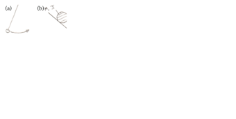

The computational power of Lagrangian mechanics comes through the use of generalised coordinates.

Definition. A set of generalised coordinates for a mechanical system completely specifies the configuration of the system.
Example. Suppose we have two particles in three dimensions, their positions are and , then the generalised coordinates are (note this is six-dimensional).
Example. Consider the double pendulum in Figure 12. It is specified by two angles and which form generalised coordinates for the system.

One can have any number of different generalised coordinate systems. Often the trick is choosing the right one! If is one set of generalised coordinates, then another set is related to the first by a general transformation
This implies that the velocities satisfy
An important quantity for a coordinate transformation is the Jacobian.
Definition. The Jacobian of the transformation is the matrix
The inverse Jacobian is given by
Example. are Cartesian coordinates in the plane, and polar coordinates. Polar coordinates are determined by
and the Jacobian is equal to
(note the singularity at the origin).
The power of generalised coordinates comes from the following theorem.
Theorem. Let and be two different sets of generalised coordinates for the same mechanical system. If the mechanical system satisfies the Euler-Lagrange equations
in one set of generalised coordinates, then it also satisfies the Euler-Lagrange equations
in the other set.
Proof. We can rewrite the first term in the Euler-Lagrange equations as
or as a matrix equation
where we have defined the ‘dotted Jacobian’ as
The second term in the Euler-Lagrange equations can similarly be written as
(note that the coordinates do not depend on the velocities , so terms like vanish). Now consider the quantity
we know that
now is a function of and only, as is , so we find
since , 0 if and 1 if . This allows us to write the second term in the Euler-Lagrange equations as
Putting it together we find
Now note that the dotted Jacobian is the time derivative of the regular Jacobian . We can then expand the term, get a cancellation and find
so the system also satisfies the Euler-Lagrange equations with respect to . □
With generalised coordinates come generalised forces and momenta.
Definition. For a Lagrangian the quantity
is the generalised force and the quantity
is the generalised (or conjugate, canonical) momentum.
In this way the Euler-Lagrange equations can be seen as a generalised form of Newton’s second law